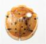
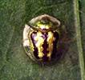
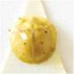

TUBER VEGETABLES ::MAJOR PESTS:: TORTOISE BEETLES
5. Tortoise beetles: (Cassididae: Coleoptera)
Distribution and status
Throughout Africa, Southern China, Southeast Asia becomes serious occasionally.
Host range
Sweetpotato, Ipomoea triloba, coffee, beet, potato and various flowers.
Damage symptoms
Skeletonization of leaves by grubs. Later grubs and adults gnaw holes in leaf lamina. Grubs are green, flat with anal projection always carry debris on its back. Pupation takes place in ventral surface of leaves.
Bionomics These metallic coloured beetles are active during monsoon. Eggs are laid on ventral leaf surface. Grubs are nocturnal in habit
Species |
Adult |
Grub |
Egg |
Life cycle |
Aspidomorpha miliaris |
Broad oval shaped, brownish-red in colour with black dots |
Flattened with spiny processes covering their body. Dried excreta are seen on the anal process |
Laid in 5 to 10 rows |
Egg, grub and pupal stages last for 9 to 11, 15 to 20 and 4 to 6 days respectively. Life cycle is completed in 28 to 36 days. |
Cassida circumdata  |
Broad oval shaped, greenish-yellow in colour with green crescent mark in middle |
Pale greenish in colour |
Laid singly. Fastened on leaf surface by filaments |
Egg, grub and pupal stages last for 3 t0 5, 10 to 15 and 6 to 8 days respectively. Life cycle is completed in 30 days. |
Chirida bipunctata |
Small metallic green in colour with six black spots on elytra |
Pale greenish in colour |
Laid singly |
Egg, grub and pupal stages last for 4 to 6, 12 to 14 and 5 to 8 days respectively. Life cycle is completed in 30 days. |
Management
Removal of convolvulaceous weeds in the surrounding area may reduce their numbers.
Conserve or encourage larval parasitoids Tetrastichus sp, predator Stalilia sp., (Mantidae).
Chemical control of this pest is seldom necessary.